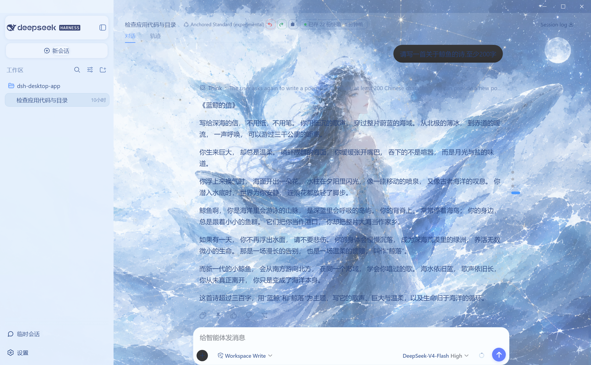

在 DeepSeek Harness 基础上打造的玻璃拟态视觉主题——半透明浅蓝玻璃面板、DeepSeek 品牌蓝按钮、智能快照工具栏、桌面伴侣桌宠，功能与美感兼得。
立即下载 查看亮点
半透明浅蓝玻璃面板、毛玻璃背景、统一视觉层级。深色系统下也强制浅色玻璃主题，文字永不压缩重叠。
修复插件管理桥不可用问题，设置页可直接管理全部插件（页面桌宠、玻璃主题、桌面伴侣等 35+ 插件）。
重新打开插件选择向导，浏览器/CLI 模式下也优雅提示，EAC 桌面端体验完整。
大肥鱼桌面伴侣，88 条多场景台词（空闲/准备/工作/等待/出错…），智能陪伴你的编码时光。
发送按钮 #4D6BFE 品牌蓝，hover 阴影 + 点击动画，禁用态也有反馈；输入框完全不透明。
撤销/恢复/快照 精简图标按钮，深蓝描边风格，与模式切换按钮无缝衔接不重叠。
侧边栏底色延伸到底部，滚轮滚动不再露出背景空缺；模式名称完整显示不被截断。
构建后自动 11 项完整性检查（verify-build.js），桥代码缺失直接构建失败，杜绝"桥不可用"复发。
源码已在 GitHub 开源，欢迎 Star ⭐ 与反馈
前往 GitHub 下载